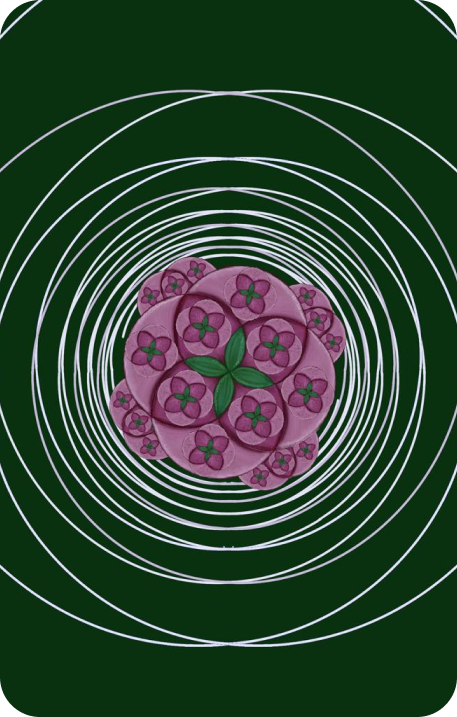

Una de les coses que vam treballar a matemàtiques van ser les corbes planes. Per veure quina relació tenia això amb el disseny vam aprendre sobre com s’utilitzaven aquestes per a la realització de logos. La pràctica que ens va tocar fer va ser un treball en grup que consistia a dissenyar un logo a partir d’una o diverses corbes planes. Nosaltres vam decidir fer un logo per a una floristeria, ja que veiem semblança entre moltes corbes i flors. Vam triar aquesta paleta de colors, ja que s’adaptava al contingut que volíem transmetre. Aquest en va ser el resultat:
